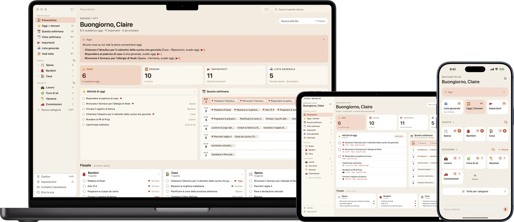
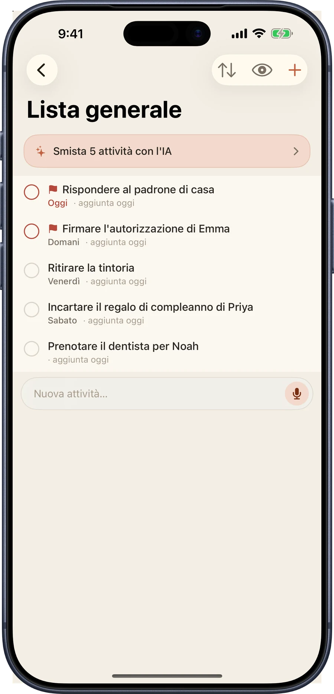
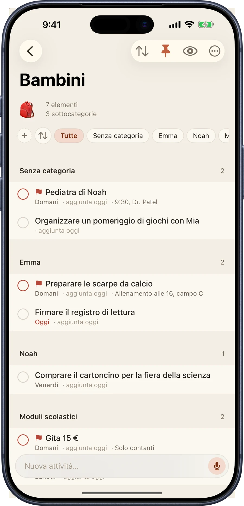
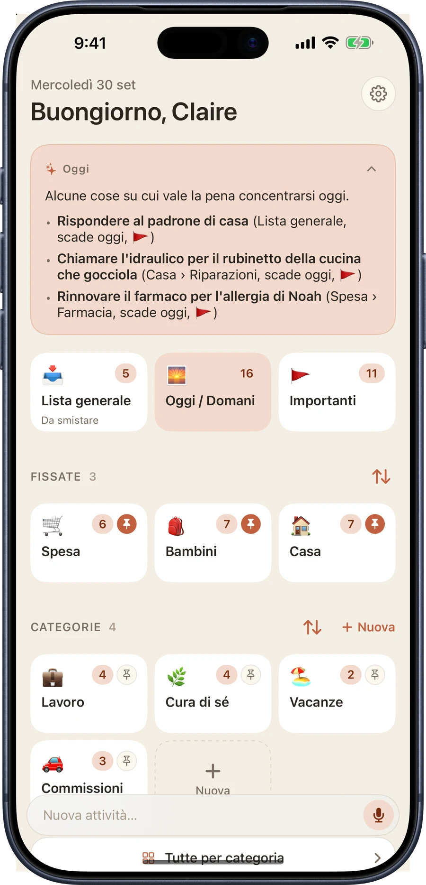
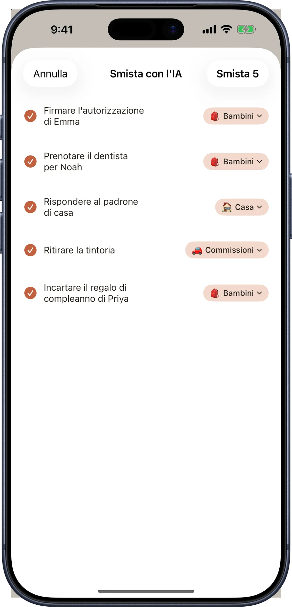
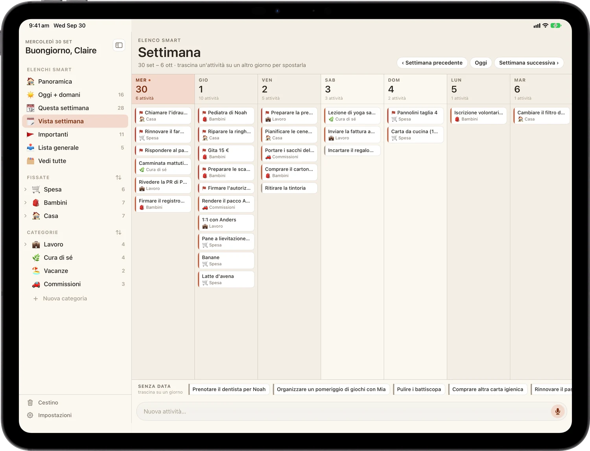
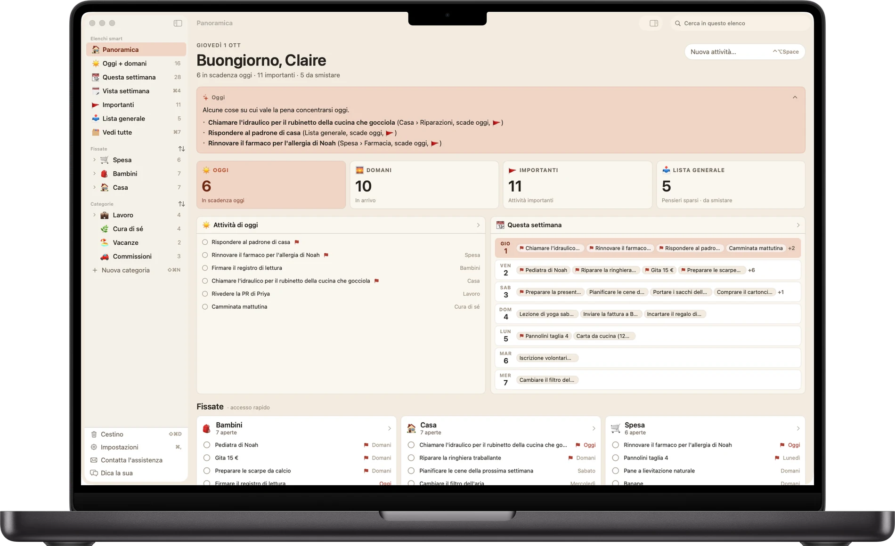

La lista che sta al passo con tutto ciò che hai in mano.
Un'app di attività calda e visiva per chi destreggia la vita di tutti i giorni. Annota tutto nel momento in cui ti viene in mente, poi smistalo quando vuoi.
Gratis da scaricare.
iPhone, iPad e Mac. Nessun account, nessuna registrazione.
Una lista, ogni schermo

Annota
Svuota la mente ora. Smista dopo.
La Lista generale è la tua casella di posta. Scrivi la cosa nell'istante in cui ti viene in mente. Niente categoria, niente scadenza, nessuna decisione in anticipo. Poi smistala quando vuoi, magari domenica.
Annotare non ti ostacola mai nel fare. La barra di aggiunta è su ogni schermata, e funzionano anche Siri e Comandi rapidi.

Organizza
Categorie, e stanze al loro interno.
Spesa, Bambini, Casa, Lavoro. Ognuna ha il suo emoji e il suo colore. Fissa quelle in cui vivi per tenerle in alto.
Quando una lista si affolla, dividila in sottocategorie: Emma, Noah, Moduli scolastici. Scorri per segnare ciò che conta, trascina per riordinare e imposta una scadenza perché nulla sfugga.

Busy B Intelligence
Un piccolo aiuto con la pila, tutto sul tuo dispositivo.
Busy B Pro aggiunge tre usi discreti dell'intelligenza sul dispositivo, creati con Apple Intelligence. Ognuno gira sul tuo iPhone, iPad o Mac. Nulla sulle tue attività viene inviato a un server, né nostro né di altri, e nulla di ciò che inserisci in Busy B viene usato per addestrare un modello.
- Riepilogo del giorno: apri l'app su una breve lettura di ciò che conta davvero oggi, ricavata dalla tua lista
- Smistamento con un tocco: smista un'intera Lista generale nelle categorie giuste con un solo tocco, con un passaggio di verifica prima che qualcosa si muova
- Arretrati: uno sguardo alle attività che restano ferme, ognuna con un suggerimento per il passo successivo


Il riepilogo del giorno, lo smistamento con un tocco e gli arretrati richiedono un dispositivo compatibile con Apple Intelligence, attivata in Impostazioni. Tutto il resto di Busy B funziona su ogni dispositivo supportato.
Aggiungi con la voce
Dillo, ed è fatto.
Busy B Pro mette un microfono nella barra di aggiunta. Toccalo, di' l'attività e viene trascritta interamente sul tuo dispositivo. Su un dispositivo compatibile con Apple Intelligence, Busy B compila anche data, categoria e segnalazione prima di salvare.
Preferisci non aprire proprio l'app? Funziona anche Siri, gratis per tutti con iOS 27 o successivo: «Ehi Siri, aggiungi ritirare la tintoria domani a Casa in Busy B».
Su iPad
Una vera app per iPad, larga tre pannelli.
Il Centro di comando è un layout completo a tre pannelli: liste intelligenti, le tue attività e i dettagli accanto. La vista Settimana mostra tutti e sette i giorni insieme, e trascini un'attività da un giorno all'altro per riprogrammarla.

Su Mac
Una vera app per Mac, con barra dei menu e tutto.
Una vera finestra con veri comandi da tastiera (⌘1–⌘5) per saltare direttamente a una lista intelligente. Stessa barra laterale, stesse attività, stesso account iCloud del tuo telefono e del tuo iPad.

Cosa c'è dentro
Abbastanza semplice da aprire e iniziare a scrivere.
Abbastanza potente da organizzare una vita piena.
- Lista generale: annota qualsiasi cosa, in qualsiasi momento, e smistala quando vuoi
- Oggi e Domani: vedi esattamente ciò che conta adesso
- Categorie: organizza a modo tuo, fin dall'inizio
- Sottocategorie: annida e raggruppa le attività dentro una categoria
- Segna e smista: scorri per segnare ciò che è importante o metterlo in una categoria
- Promemoria di scadenza: piccoli richiami perché nulla sfugga
- Attività ricorrenti: quelle che tornano ogni settimana
- Vista Settimana: trascina le attività tra i giorni per riprogrammarle
- Centro di comando su iPad: un layout a tre pannelli pensato per iPad
- Sincronizzazione iCloud: le tue attività, ovunque, in automatico
- Nove temi: palette fatte a mano, ognuna con modalità scura
- Riepilogo del giorno: una lettura sul dispositivo di ciò che conta oggi
- Smistamento con un tocco: smista un'intera casella nelle categorie con un tocco
- Arretrati: fa emergere le attività che restano ferme
- App per Mac: una finestra nativa con la sua barra dei menu e i comandi da tastiera
- Inserimento vocale: tocca il microfono, di' l'attività, Busy B compila il resto
- Siri: «aggiungi un'attività a Busy B» funziona a mani libere, gratis per tutti
Categorie illimitate, sottocategorie, l'intera collezione di temi, Busy B Intelligence e inserimento vocale sono inclusi in Busy B Pro, disponibile nell'app. Siri resta gratis per tutti.
Dove funziona
La stessa lista, sul dispositivo che hai più vicino.
Aggiungi sul telefono, smista sull'iPad, rivedi sul Mac. iCloud tiene aggiornati tutti e tre senza che tu ci pensi.
iPhone
Riquadri per la giornata, una casella generale e aggiunta con un solo pollice. iOS 18 o successivo.
Disponibile oraiPad
Il Centro di comando a tre pannelli e la vista Settimana. iPadOS 18 o successivo.
Disponibile oraMac
Una finestra nativa, veri comandi da tastiera, la sua barra dei menu. macOS 15 o successivo, Apple silicon.
Disponibile oraLa tua lista, tua
Nessun account. Nessuna registrazione. Nessun nostro server.
I dati delle tue attività restano tuoi, sincronizzati in privato tramite il tuo account iCloud, direttamente tra i tuoi dispositivi. Non c'è niente da creare, nessun accesso da fare e nessuna copia della tua settimana su un server nostro, perché non ne abbiamo uno.
Parti dalla lista di oggi.
Gratis su App Store.
iPhone, iPad e Mac.
Domande, bug o un'idea per l'app? Scrivi a support@busybplanner.com e ti risponde una persona, di solito entro un giorno o due. Le domande comuni hanno già risposta nella pagina di assistenza.